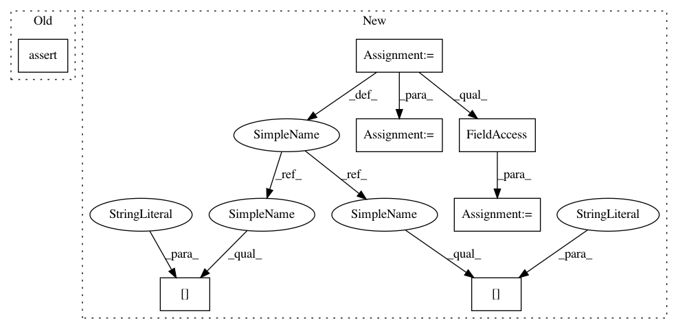

f2f419b89221602dc31c69de32df1cba281db481,upsetplot/tests/test_data.py,,test_from_contents,#Any#Any#,90
Before Change
{"cat3"},
[]],
data=empty_data)
assert_series_equal(out[id_column].reset_index(drop=True),
pd.Series(["aa", "bb", "cc", "dd", "ee", "ff"],
name=id_column))
assert_frame_equal(out.drop(columns=[id_column]), out2)
// TODO: empty category (can"t be represented with from_memberships)
// TODO: unordered dict
After Change
def test_from_contents(typ=set, id_column="id"):
contents = {"cat1": {"aa", "bb", "cc"},
"cat2": {"cc", "dd"},
"cat3": {"ee"},
}
empty_data = pd.DataFrame(index=["aa", "bb", "cc", "dd", "ee"])
baseline = from_contents(OrderedDict(contents), data=empty_data,
id_column=id_column)
// data=None
out = from_contents(OrderedDict(contents), id_column=id_column)
assert_frame_equal(out.sort_values(id_column), baseline)
// unordered contents dict
out = from_contents({"cat3": contents["cat3"],
"cat2": contents["cat2"],
"cat1": contents["cat1"]},
data=empty_data, id_column=id_column)
assert_frame_equal(out.reorder_levels(["cat1", "cat2", "cat3"]),
baseline)
// empty category
out = from_contents({"cat1": contents["cat1"],
"cat2": contents["cat2"],
"cat3": contents["cat3"],
"cat4": []},
data=empty_data,
id_column=id_column)
assert not out.index.to_frame()["cat4"].any() // cat4 should be all-false
assert len(out.index.names) == 4
out.index = out.index.to_frame().set_index(["cat1", "cat2", "cat3"]).index
assert_frame_equal(out, baseline)
@pytest.mark.parametrize("id_column", ["id", "blah"])
In pattern: SUPERPATTERN
Frequency: 3
Non-data size: 7
Instances
Project Name: jnothman/UpSetPlot
Commit Name: f2f419b89221602dc31c69de32df1cba281db481
Time: 2019-05-30
Author: joel.nothman@gmail.com
File Name: upsetplot/tests/test_data.py
Class Name:
Method Name: test_from_contents
Project Name: OpenNMT/OpenNMT-py
Commit Name: bc1351d47d9fe83bc6c7830a8563ddb874953ed4
Time: 2019-01-09
Author: benzurdopeters@gmail.com
File Name: tools/extract_embeddings.py
Class Name:
Method Name: main
Project Name: soft-matter/trackpy
Commit Name: 22c8e467fce55e8dd5c2a3b5363ea7fc7ef26bfb
Time: 2018-01-23
Author: caspervdw@gmail.com
File Name: trackpy/tests/test_reproducibility.py
Class Name: TestReproducibility
Method Name: test_characterize
Project Name: jnothman/UpSetPlot
Commit Name: f2f419b89221602dc31c69de32df1cba281db481
Time: 2019-05-30
Author: joel.nothman@gmail.com
File Name: upsetplot/tests/test_data.py
Class Name:
Method Name: test_from_contents